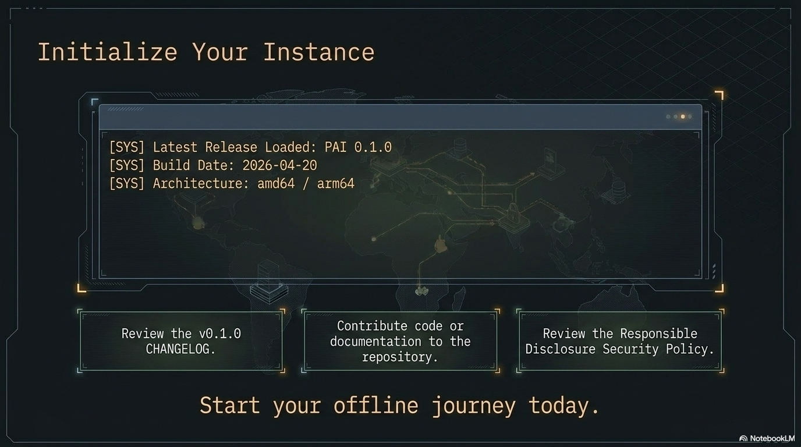

Getting Started with PAI¶

This page is the long-form introduction. If you'd rather jump straight to flashing and booting, see the quickstart.
1. What is PAI and who is it for?¶
PAI is a personal AI operating system that runs from a USB stick. You flash an ISO, plug the stick into any reasonably modern x86_64 machine, boot from it, and land in a desktop where a local LLM, a browser, a wallet, and a small set of AI-oriented tools are already wired up and ready to use.
It's meant for:
- People who want a private, local AI workspace that doesn't depend on a cloud provider.
- Researchers and tinkerers who want a reproducible environment to run experiments.
- Anyone who wants to carry their AI setup between machines without touching the host OS.
PAI does not replace your daily driver. It runs alongside it, on its own stick, and leaves your installed system untouched.

2. How PAI boots — a mental model¶
Three layers, in order:
- Firmware — your machine's UEFI hands control to the USB stick.
- Live OS — a minimal Linux image loads into RAM. Nothing is written to your internal disk.
- Session — a Sway desktop starts. Ollama is already running in the background. A browser, a terminal, and the PAI launcher are on screen.
If you pull the stick out after shutdown, the machine is exactly as you left it. The only state PAI keeps is whatever you explicitly put on the stick's persistence partition (see next section).
sequenceDiagram
autonumber
participant F as Firmware (UEFI/BIOS)
participant U as USB stick
participant L as live-boot
participant K as Linux kernel
participant S as systemd → Sway session
F->>U: boot from removable
U->>L: GRUB → kernel + initramfs
L->>K: kernel loaded into RAM
K->>L: mount read-only squashfs
L->>L: optional LUKS unlock + overlay mount
L->>S: start systemd
S->>S: Ollama, Open WebUI, Waybar, Sway
S-->>F: desktop ready — all in RAM3. What persistence is and why you probably want it¶
By default PAI is stateless: each boot is a clean session. That's great for demos, visiting machines, or handing the stick to a friend. It's frustrating if you want to keep chat history, downloaded models, or browser bookmarks between boots.
Persistence is an optional encrypted partition on the same USB stick. When enabled, PAI mounts it at first boot and stores:
- Ollama models you've pulled
- Your home directory (chats, configs, downloads)
- Wallet keys
- Browser profile
It's encrypted with a passphrase you set on first boot. Forget the passphrase and the partition is gone — there is no recovery.
Most users should enable persistence. Skip it only if you genuinely want the stick to be disposable.
4. Your first session — a 10-minute tour¶
Assume you've followed the quickstart and you're now sitting at the PAI desktop. Here's the tour.
Minute 0–2: the desktop¶
Sway is a tiling window manager. The bar at the bottom shows workspaces
(1–9), the current time, battery, and network. The launcher is bound
to Super. There's no "start menu"; everything is a keystroke.
Minute 2–5: Ollama¶
Open a terminal (Super + Enter). Run:
The first prompt has a short pause while the model loads into RAM.
After that it's local, offline, and as fast as your hardware allows.
Type a question. Press Ctrl+D to exit.
Models you pull are cached. With persistence enabled, they survive reboots. Without persistence, they vanish on shutdown.
Minute 5–7: the browser¶
The launcher has a "Browser" entry. It opens a hardened browser with sensible defaults. The browser can talk to your local Ollama via a small extension — meaning you can chat with your local model from any web page, without sending anything to a third party.
Minute 7–10: the wallet¶
PAI ships with a local wallet for signing and identity. On first run it generates a keypair, stores it in the persistence partition (if enabled), and displays a recovery phrase. Write the phrase down on paper. Without it, losing the stick means losing the key.
5. What to read next¶
- quickstart.md — if you haven't flashed yet.
- architecture.md — how the pieces fit together.
- editions.md — which ISO to choose.
- ../FAQ.md — common questions.
- troubleshooting.md — when something breaks.
- ../CONTRIBUTING.md — if you want to help.
Welcome aboard.